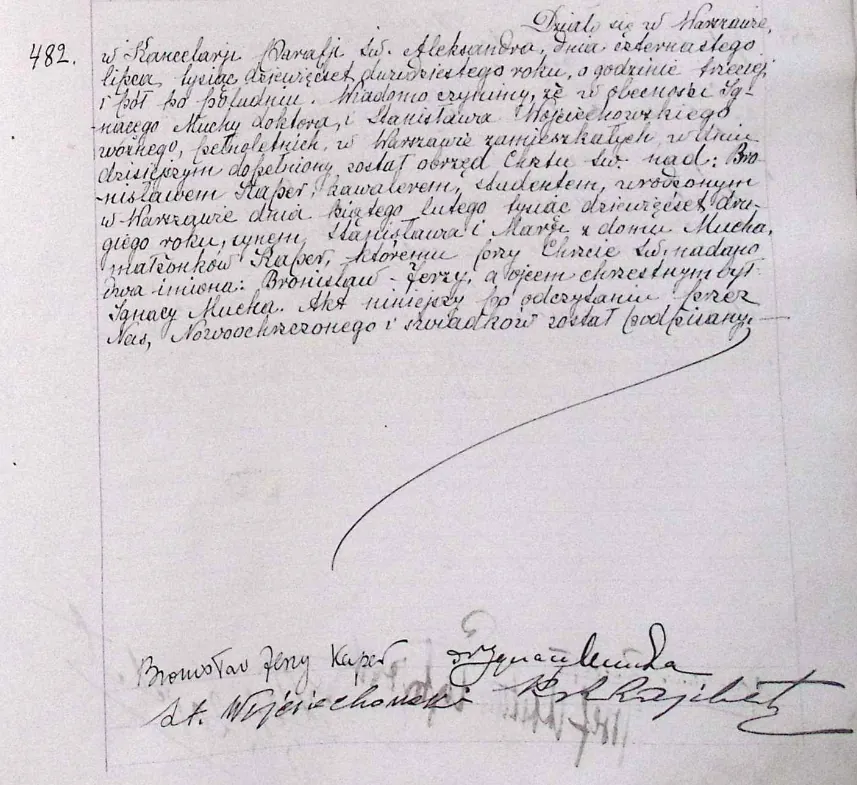
Open gallery · 10 imagesWarsaw — documents and contexts
Documents and contextual images connected with Kaper’s Warsaw formation, early work, and later Warsaw reception.
Curated evidence
Selected images, archival documents, sheet music, audio renderings and links to institutional media.

Open gallery · 10 imagesDocuments and contextual images connected with Kaper’s Warsaw formation, early work, and later Warsaw reception.
 Open gallery · 12 images
Open gallery · 12 imagesGallery of documents, press items and contextual sources relating to Bronisław Kaper’s Berlin years, including directory evidence and German film-periodical materials.
 Open gallery · 6 images
Open gallery · 6 imagesGallery of press items, posters and contextual materials relating to Bronisław Kaper’s Paris years and his work in French cinema and theatrical culture, 1933–1934.
 Open gallery · 6 images
Open gallery · 6 imagesGallery of immigration and travel documents relating to Bronisław Kaper’s journey to America, including arrival, declaration of intention and border-crossing records.
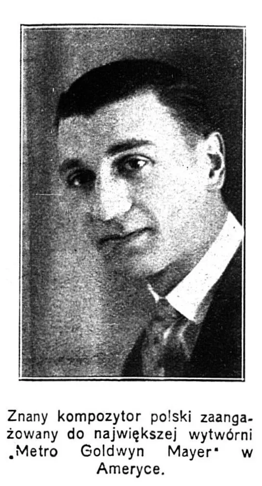
Open gallery · 11 imagesGallery of documents, press items and contextual images relating to Bronisław Kaper’s early MGM years and Hollywood career in the mid-1930s.
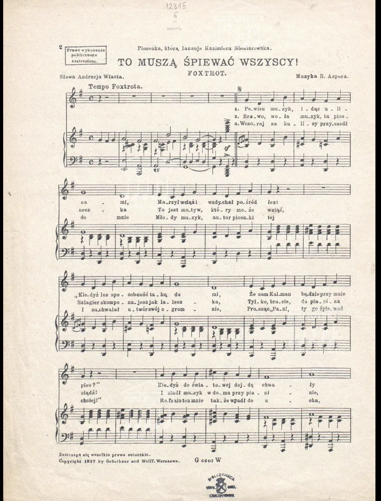
Open gallery · 3 imagesSelected pages from early Polish sheet-music editions of Kaper’s songs published under the Bruno/Br. Asper pseudonym, including “To muszą śpiewać wszyscy,” “Jak się da, to się zrobi!” and “Ja nie mam głosu!”.

Trade-press advertisement for Der Korvettenkapitän, published in Der Kinematograph in 1930.
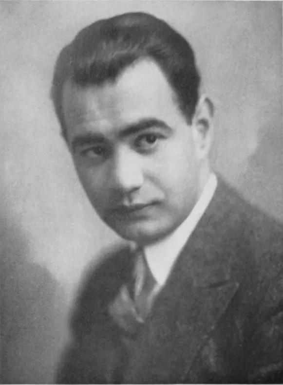
Portrait of Fritz Rotter, the lyricist associated with Kaper’s early German film songs.
Audio rendering created by Iwona Lindstedt from her own notated transcription/edition of Bronisław Kaper’s early composition “Rozmowa” / “Conversation,” preserved in the Bronislaw Kaper Papers.
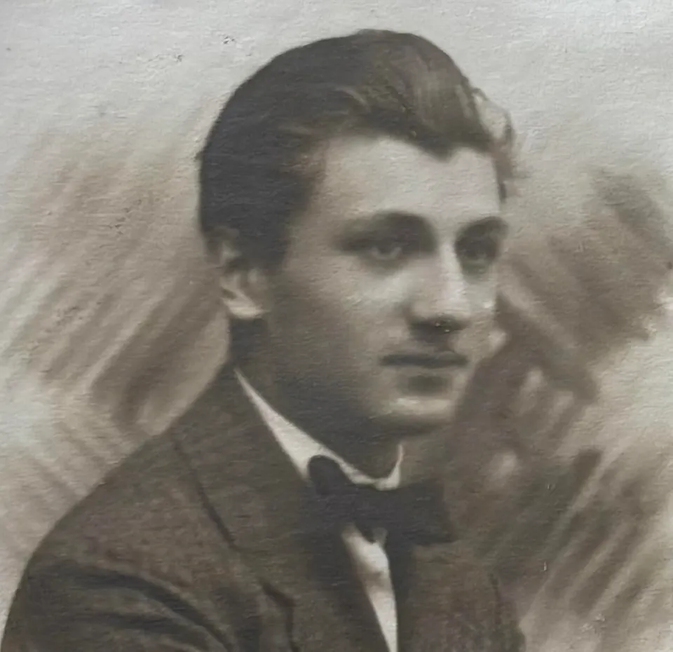
Portrait of Bronisław Kaper as a young man, from his University of Warsaw student-file materials.
Publicity portrait of Louis B. Mayer, MGM studio head, photographed in 1934.
Audio rendering created by Iwona Lindstedt from her own notated transcription/edition of Bronisław Kaper’s early Etude for piano, preserved in the Bronislaw Kaper Papers.
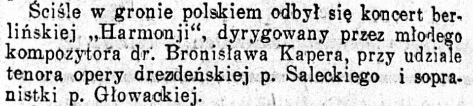
Press clipping from “Kolonja polska w Berlinie,” published in Kurier Warszawski on 27 March 1929, documenting Polish cultural activity in Berlin and Kaper’s milieu.

Standesamt I in Berlin register entry naming Bronisław Kaper, 1927.
Audio rendering created by Iwona Lindstedt from her own notated transcription/edition of the first movement of Bronisław Kaper’s Sonatina for piano, preserved in the Bronislaw Kaper Papers.

Standesamt I in Berlin register entry for Sirot, corresponding to the 1927 Kaper register record.

Press notice connected with the Berlin premiere appearance of the Bick–Kaper piano duo, published in Rhein- und Ruhrzeitung on 14 February 1929.
Audio rendering created by Iwona Lindstedt from her own notated transcription/edition of the second movement of Bronisław Kaper’s Sonatina for piano, preserved in the Bronislaw Kaper Papers.
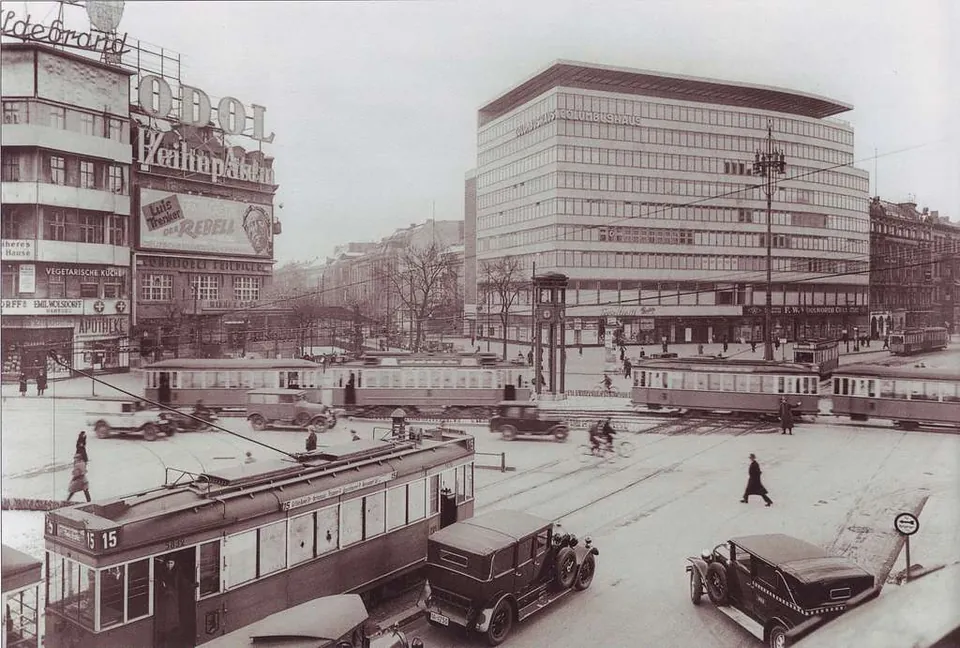
Photograph of Potsdamer Platz with the Columbushaus in Berlin, taken by Waldemar Titzenthaler in 1933. Used as context for Kaper’s Berlin years.
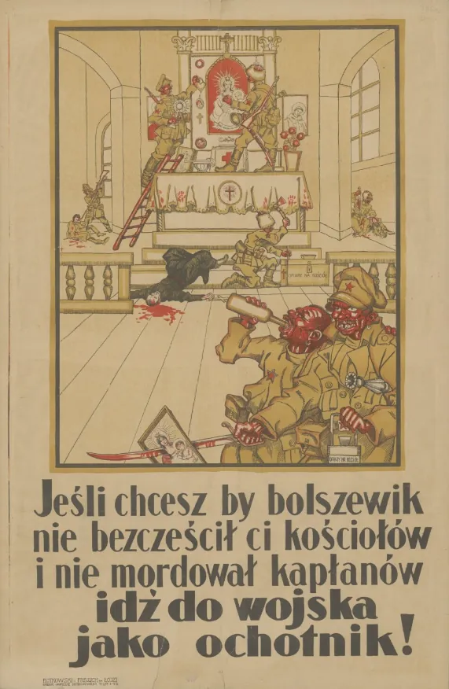
Polish anti-Bolshevik propaganda poster “Bolszewik,” used as historical and military-service context for Kaper’s Warsaw years and the Polish–Soviet War period.
Audio rendering created by Iwona Lindstedt from her own notated transcription/edition of the third movement of Bronisław Kaper’s Sonatina for piano, preserved in the Bronislaw Kaper Papers.

The Warsaw Philharmonic building at the corner of Jasna and Henryka Sienkiewicza streets, published in a 1933 company publication.
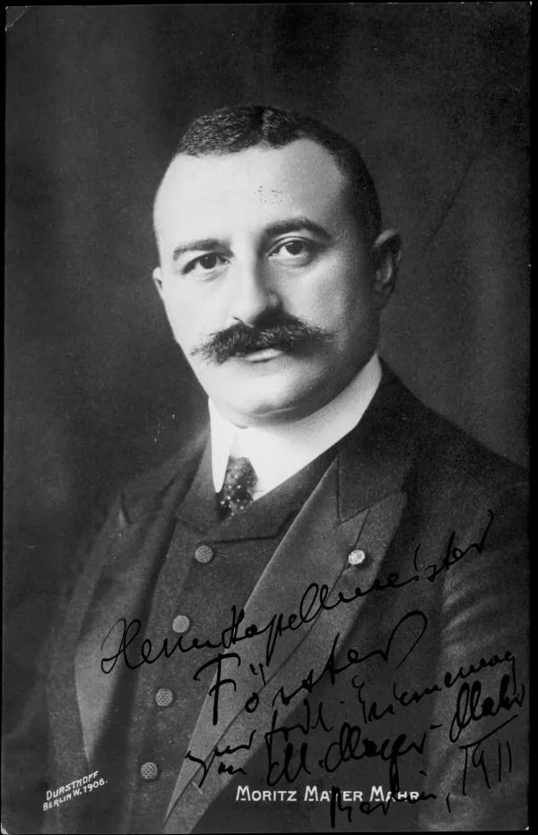
Portrait of Moriz Mayer-Mahr, the Berlin pianist and teacher with whom Kaper studied.
Official Filmportal.de / DFF opening excerpt from Alraune (1929/1930), a first sound-film version of Hanns Heinz Ewers’s novel with music by Bronisław Kaper.

Al Hirschfeld’s window poster for A Night at the Opera (Metro-Goldwyn-Mayer, 1935).
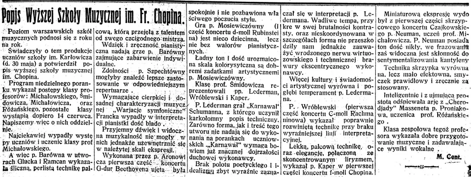
Press notice for a student recital at the Chopin Music School, published in Nasz Przegląd in 1925.
Official Filmportal.de / DFF opening excerpt from Ein toller Einfall (1932), the UFA musical comedy with songs by Bronisław Kaper and Walter Jurmann.
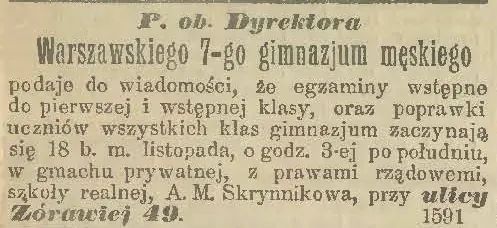
Examination notice for A. M. Skrynnikowa’s seven-grade boys’ gymnasium at Żórawia 49, Warsaw, published in 1914 during Kaper’s period at the school.

Press clipping from Kurier Warszawski, 18 January 1928, reviewing Eliza Rozenblum’s recital and mentioning piano pieces by B. Kaper.
Official Filmportal.de / DFF opening excerpt from Melodie der Liebe (1932), a musical comedy with songs by Bronisław Kaper and Walter Jurmann.